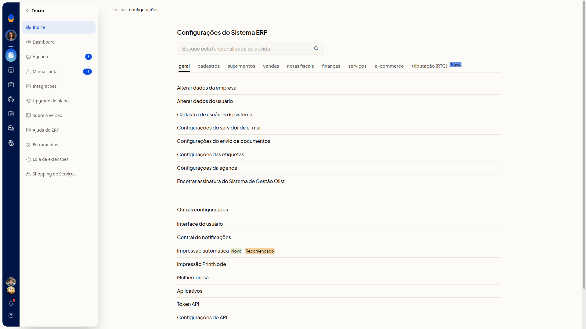
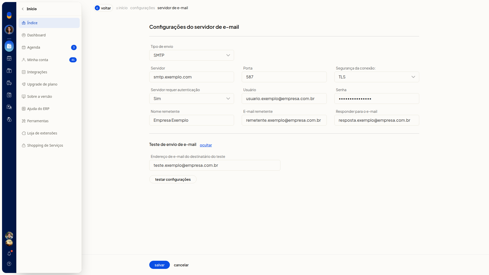
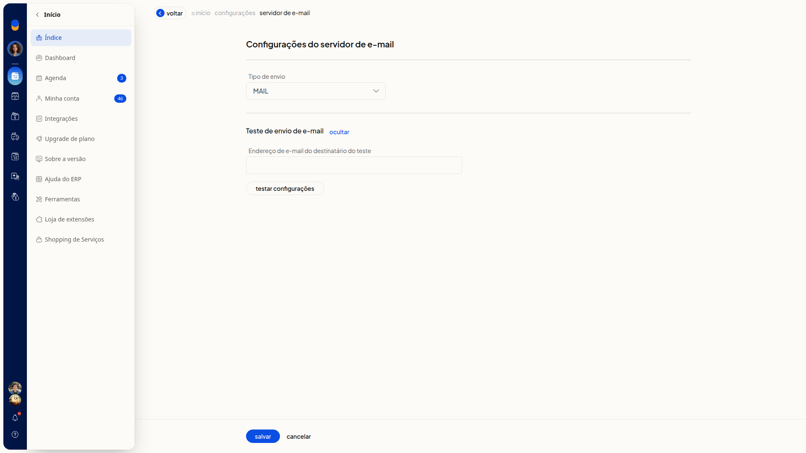
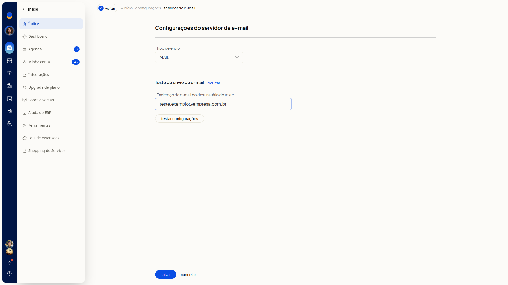

Configurar o envio de documentos por e-mail
No ERP da Olist, você define como os emails saem do sistema. Em Configurações do servidor de e-mail, você escolhe o tipo de envio (SMTP, SMTP - Google ou MAIL), informa os dados do servidor e do remetente e pode testar o envio.
Pré-requisitos
- Para o tipo SMTP, tenha em mãos Servidor, Porta, Segurança da conexão e, se o provedor exigir, Usuário e Senha.
- Se Configurações do servidor de e-mail não aparecer para você, peça acesso ao administrador da conta.
Importante
- Configurações do envio de documentos não tem regras de envio por email. Configure o envio em Configurações do servidor de e-mail.
- No tipo SMTP - Google, a tela informa que é preciso estar logado no Google e mostra o aviso Você não está logado no Google.
- Nenhum campo de Configurações do servidor de e-mail é obrigatório.
Instruções
Escolha o tipo de envio e siga os passos correspondentes.
Configurar o tipo SMTP
-
Acesse Configurações > Configurações ERP e abra a aba Geral.

-
Clique em Configurações do servidor de e-mail.
-
Selecione SMTP em Tipo de envio.

Dados do servidor
-
Preencha Servidor e Porta.
-
Selecione SSL, TLS ou Nenhuma em Segurança da conexão.
-
Selecione Sim ou Não em Servidor requer autenticação.

-
Preencha Usuário e Senha.
Dados do remetente
-
Preencha Nome remetente, E-mail remetente e Responder para o e-mail.

-
Clique em Salvar para gravar o servidor SMTP, o remetente e o endereço de resposta.
Configurar o tipo SMTP - Google
-
Acesse Configurações > Configurações ERP > Geral > Configurações do servidor de e-mail.
-
Selecione SMTP - Google em Tipo de envio.

-
Confira Servidor smtp.gmail.com, Porta 587 e Segurança da conexão em TLS.
-
Clique em Logar no Google se aparecer o aviso Você não está logado no Google.
-
Clique em Salvar para gravar o tipo SMTP - Google.
Configurar o tipo MAIL
-
Acesse Configurações > Configurações ERP > Geral > Configurações do servidor de e-mail.
-
Selecione MAIL em Tipo de envio. Você não precisa informar servidor, porta nem autenticação.

-
Clique em Salvar para usar o tipo MAIL.
Testar as configurações de email
-
Acesse Configurações > Configurações ERP > Geral > Configurações do servidor de e-mail.
-
Clique em exibir na seção Teste de envio de e-mail.

-
Preencha Endereço de e-mail do destinatário do teste.

-
Clique em Testar configurações para enviar um email de teste ao destinatário informado.